Mrk 421 / Mrk 501 WCDA Flux Periodicity Analysis v2
N0 flux；E0=3 TeV，固定 gamma=2.6。本页包括 Mrk 421/501 daily 与 weekly WCDA flux、Mrk 421 Fermi weekly 重新对齐到 v2 WCDA weekly flux 轴、TELAMON-LHAASO flux 对齐，以及 Mrk 421 MJD 59500-60500 fixed-window quick-look。数据与方法
WCDA 主序列使用 N0/N0_err，先保留 fit_status=OK、有限 N0、有限且正的 N0_err。随后按源和时间尺度应用不确定度离群点 QC：排除 N0_err > 5 × median(N0_err) 的行；被排除行保存到 aligned CSV 旁边的 qc_rejected 表。
CWT 使用 Morlet wavelet，WWZ 使用 libwwz；周期图为 quick-look 产品。
显著性范围。主序列 CWT/WWZ 峰值仍是 quick-look 候选；本版只对用户指定的 xgm MJD 60200-60700 CWT/WWZ 目标运行 AR(1) surrogate 检验，且不做 source/method/window-search/post-trial correction。
峰值摘要
| 源 | 序列 | N | MJD min | MJD max | dt [d] | CWT [d] | WWZ [d] |
|---|---|---|---|---|---|---|---|
| Mrk 421 | WCDA daily N0 flux | 1570 | 59281.500 | 60887.500 | 1.000 | 132.23 | 128.17 |
| Mrk 421 | WCDA weekly N0 flux | 229 | 59284.500 | 60880.500 | 7.000 | 367.33 | 131.25 |
| Mrk 421 | Fermi weekly on WCDA flux axis | 224 | 59284.500 | 60880.500 | 7.000 | 583.10 | 600.00 |
| Mrk 501 | WCDA daily N0 flux | 1560 | 59282.500 | 60887.500 | 1.000 | 157.25 | 152.49 |
| Mrk 501 | WCDA weekly N0 flux | 229 | 59284.500 | 60880.500 | 7.000 | 462.80 | 436.07 |
覆盖范围说明
- WCDA daily flux 覆盖到 2025-07-31。
- WCDA weekly flux 覆盖到 2025-07-27。
- 因此 v2 比 v1 counts/proxy 覆盖短，不复现晚 2025/2026 的 WCDA-only 结果。
WCDA flux QC 摘要
| 源 | 尺度 | OK行 | 保留 | 排除 | N0_err上限 |
|---|---|---|---|---|---|
| Mkn421 | day | 1588 | 1570 | 18 | 8.206e-13 |
| Mkn421 | week | 229 | 229 | 0 | 3.142e-13 |
| Mkn501 | day | 1591 | 1560 | 31 | 6.963e-13 |
| Mkn501 | week | 229 | 229 | 0 | 2.571e-13 |
主图
Mrk 421 WCDA daily N0 flux
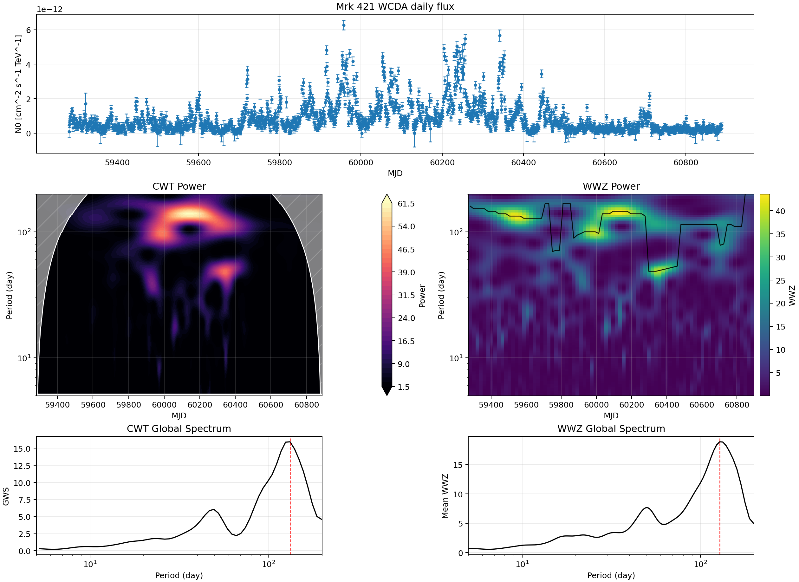
Mrk 421 WCDA weekly N0 flux
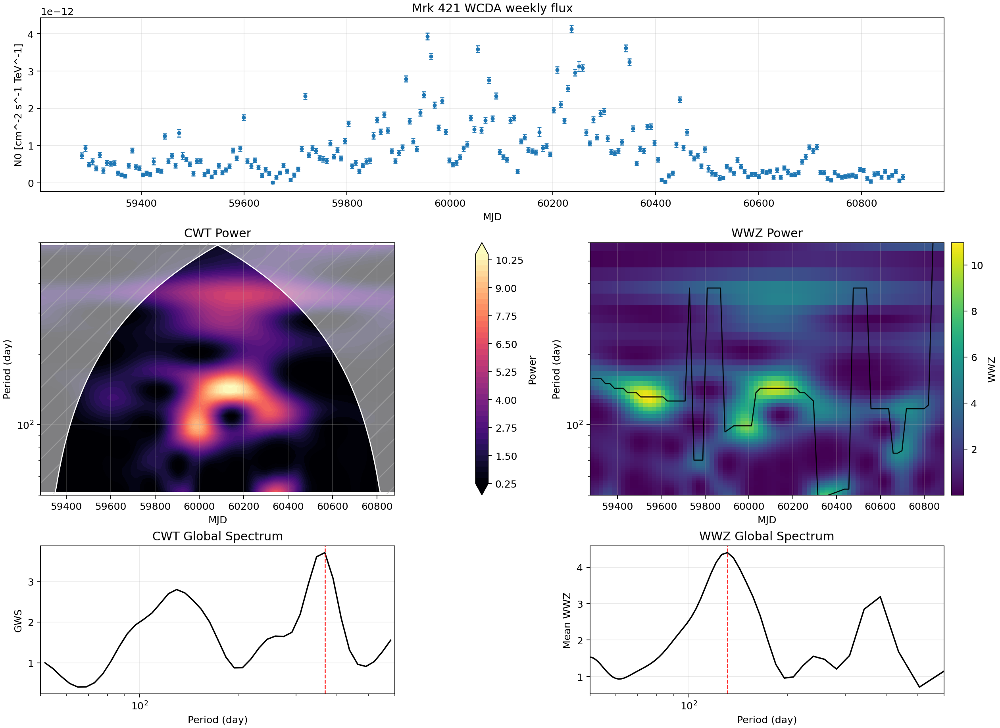
Mrk 421 Fermi weekly on WCDA flux axis
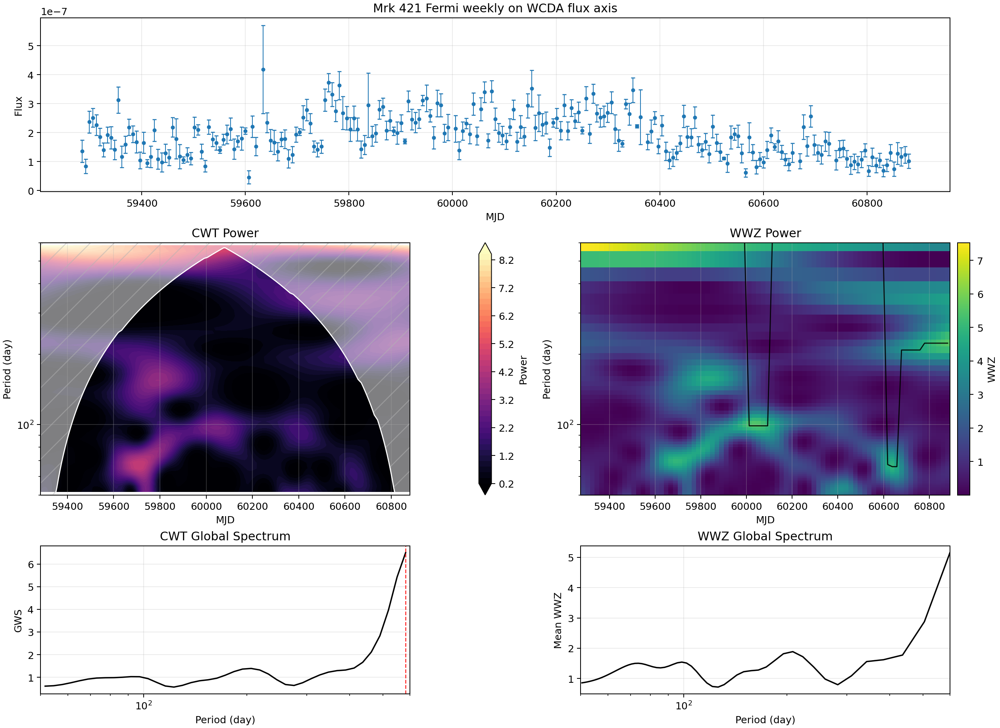
Mrk 501 WCDA daily N0 flux
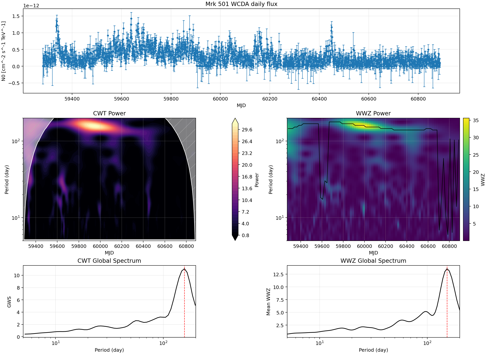
Mrk 501 WCDA weekly N0 flux
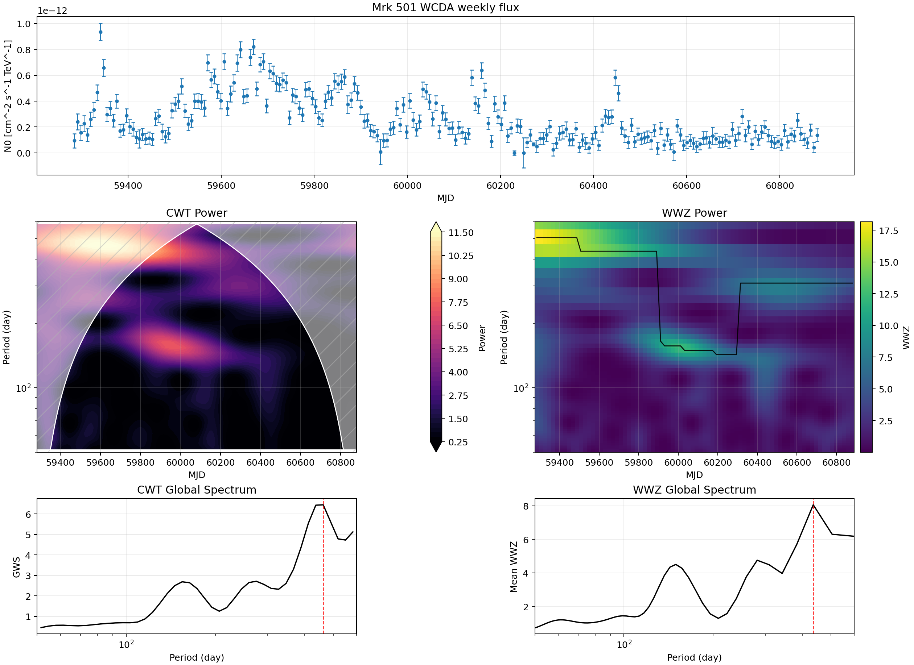
Mrk 421 MJD 59500-60500 fixed-window quick-look
使用 weekly N0 flux 重算窗口 CWT/WWZ，并保留 140 d ±10% target-band 峰值定位；不计算 FAP 或显著性参考线。
| 方法 | 周期 [d] | Cycles | Observed | 显著性 |
|---|---|---|---|---|
| CWT strongest | 137.59 | 7.22 | 3.669 | 暂缓 |
| WWZ strongest | 138.89 | 7.16 | 4.776 | 暂缓 |
| CWT targeted 140 d band | 137.59 | 7.22 | 3.669 | 暂缓 |
| WWZ targeted 140 d band | 138.89 | 7.16 | 4.776 | 暂缓 |
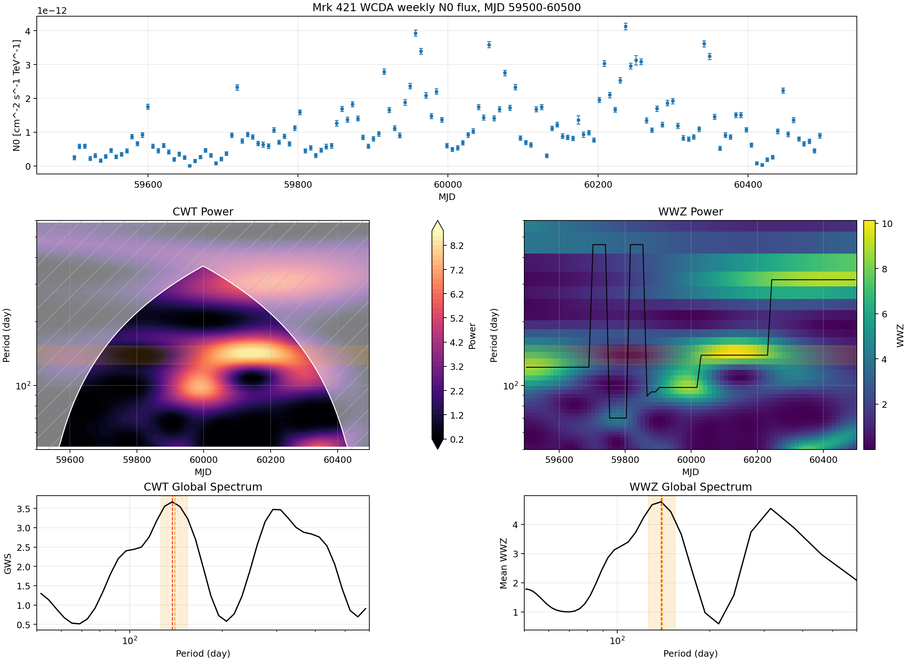
xgm poster flux quick-look
只用 daily N0 flux 重算 MJD 60200-60700。MJD 61020-61098 超出当前 flux 覆盖范围，标为待更新。
与 xgm poster 第 5 页的 51.05 d 结果不是同一口径：poster 面板使用 WCDA counts，并在 PSD 面板上显示参考线；v2 表格使用 strict-batch daily N0 flux，并报告同一采样下 AR(1) surrogate 的 local/global FAP。因此 poster 上读到的 >99% 不能直接等价为 v2 flux 的 >99%。
| 口径 | 输入 | 方法 | N | alpha | 局部峰 [d] | power | local FAP | global FAP | 99% |
|---|---|---|---|---|---|---|---|---|---|
| xgm poster page 5 | WCDA counts | WWZ/PSD visual reference | - | - | - | - | - | - | claimed on poster |
| local v1 counts/proxy reproduction | excess counts proxy | WWZ AR(1) local-window | 493 | 0.722 | 49.92 | 12.330 | 0.0619 | - | no |
| v2 strict-flux WWZ | daily N0 flux | WWZ AR(1) local/global | 491 | 0.828 | 49.92 | 16.697 | 0.1009 | 0.7463 | no |
| v2 strict-flux CWT | daily N0 flux | CWT AR(1) local/global | 491 | 0.828 | 49.53 | 9.781 | 0.3317 | 0.9540 | no |
| 目标 | 周期 [d] | WWZ power | Cycles | 显著性 |
|---|---|---|---|---|
| v2 flux global peak | 111.01 | 17.175 | 4.50 | 见下方 targeted AR(1) |
| xgm poster reference 51.05 d nearest grid | 49.92 | 16.697 | 10.00 | 见下方 targeted AR(1) |
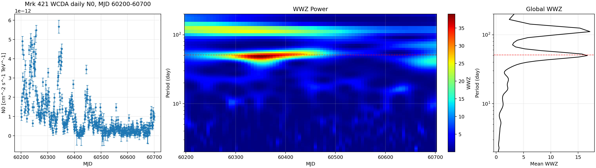
展开查看之前的 counts/proxy 版本
以下是 v1 counts/proxy 的同一 MJD 60200-60700 窗口，仅作输入数据和显著性口径对照；不属于 v2 strict-flux 结果。
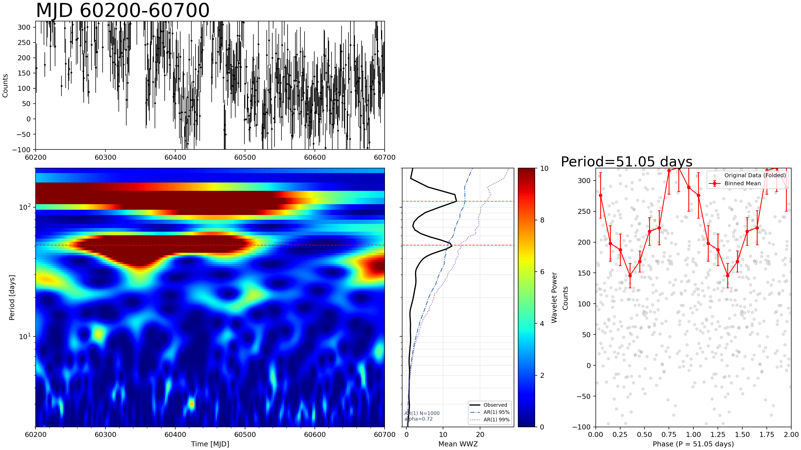
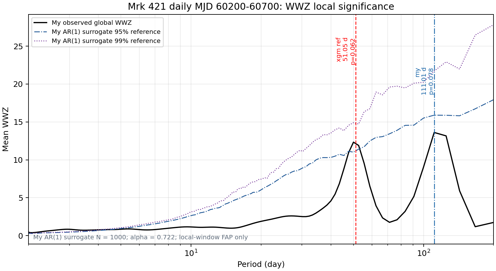
xgm 窗口 WWZ 显著性
AR(1) Gaussian surrogate 使用同一 v2 daily flux 采样；local FAP 是目标周期 ±10% 窗口内最大 global-WWZ 的检验，global FAP 是同一 2-200 d 搜索范围内最大值参考；不包含 source/method/window-search/post-trial correction。
| 目标 | 目标周期 [d] | 局部峰 [d] | WWZ | local FAP | global FAP | 99% | Nsim |
|---|---|---|---|---|---|---|---|
| v2 flux global peak | 111.01 | 111.01 | 17.175 | 0.1728 | 0.7233 | 否 | 1000 |
| xgm poster reference 51.05 d | 51.05 | 49.92 | 16.697 | 0.1009 | 0.7463 | 否 | 1000 |
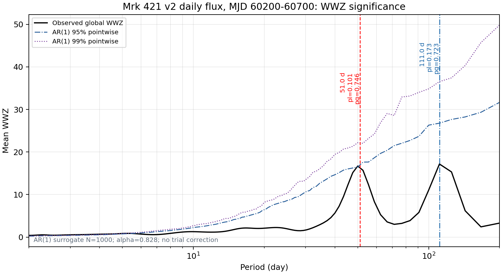
xgm 窗口 CWT quick-look
| 目标 | 周期 [d] | CWT power | Cycles | 显著性 |
|---|---|---|---|---|
| v2 flux CWT global peak | 124.81 | 15.424 | 4.00 | 见下方 CWT AR(1) |
| xgm poster reference 51.05 d nearest grid | 52.48 | 8.829 | 9.51 | 见下方 CWT AR(1) |
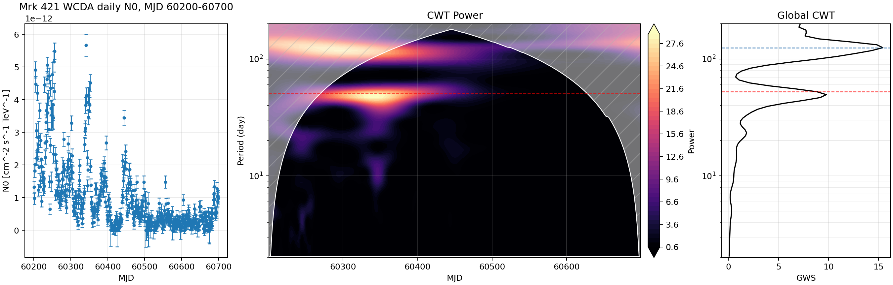
xgm 窗口 CWT 显著性
CWT 使用同一 v2 daily flux 采样的 AR(1) Gaussian surrogate；local FAP 是目标周期 ±10% 窗口内最大 global-CWT 的检验，global FAP 是同一 2-200 d 搜索范围内最大值参考；不包含 source/method/window-search/post-trial correction。
| 目标 | 目标周期 [d] | 局部峰 [d] | CWT | local FAP | global FAP | 99% | Nsim |
|---|---|---|---|---|---|---|---|
| v2 flux CWT global peak | 124.81 | 124.81 | 15.424 | 0.2148 | 0.6394 | 否 | 1000 |
| xgm poster reference 51.05 d | 51.05 | 49.53 | 9.781 | 0.3317 | 0.9540 | 否 | 1000 |
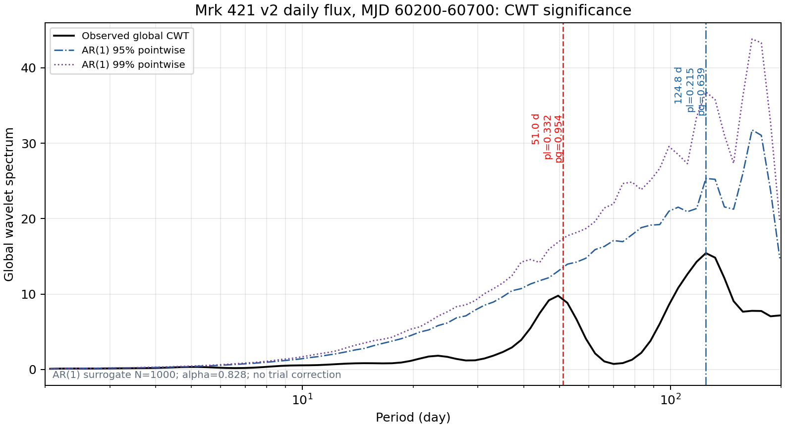
TELAMON-LHAASO flux 对齐
v2 使用 WCDA weekly N0 重画 gamma-ray 面板。重叠窗口为 MJD 59580.000-60880.500；WCDA 186 点，TELAMON 14 mm 31 点，7 mm 23 点。此图只作视觉同步上下文，不给出相关、时延或 QPO 显著性。
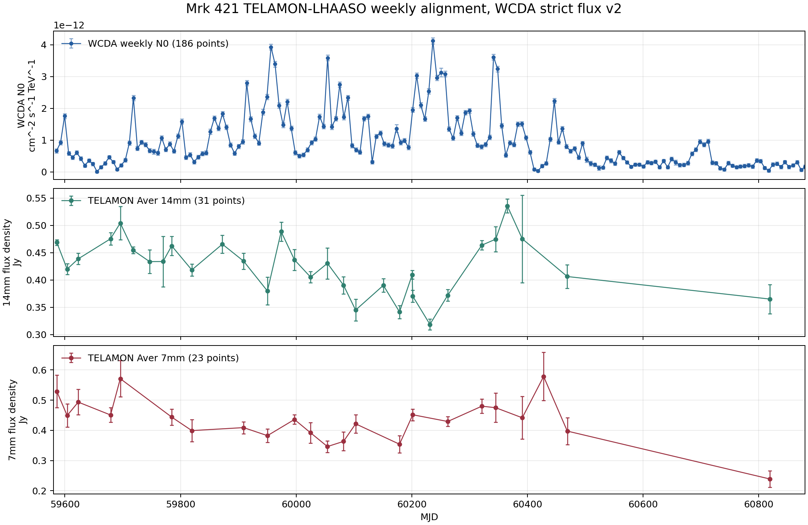
N0 flux at E0=3 TeV with fixed gamma=2.6. It includes Mrk 421/501 daily and weekly WCDA flux, Mrk 421 Fermi weekly realigned to the v2 WCDA weekly flux axis, TELAMON-LHAASO flux alignment, and a Mrk 421 MJD 59500-60500 fixed-window quick-look.Data and Methods
The WCDA series uses N0/N0_err. It first keeps rows with fit_status=OK, finite N0, and finite positive N0_err. It then applies a per-source/per-cadence uncertainty-outlier QC cut: rows with N0_err > 5 × median(N0_err) are excluded, and rejected rows are written beside the aligned CSVs as qc_rejected tables.
CWT uses a Morlet wavelet and WWZ uses libwwz; these are quick-look products.
Significance scope. The main CWT/WWZ peaks remain quick-look candidates. This pass runs AR(1) surrogate significance only for the user-requested xgm MJD 60200-60700 CWT/WWZ targets, with no source/method/window-search/post-trial correction.
Peak Summary
| Source | Series | N | MJD min | MJD max | dt [d] | CWT [d] | WWZ [d] |
|---|---|---|---|---|---|---|---|
| Mrk 421 | WCDA daily N0 flux | 1570 | 59281.500 | 60887.500 | 1.000 | 132.23 | 128.17 |
| Mrk 421 | WCDA weekly N0 flux | 229 | 59284.500 | 60880.500 | 7.000 | 367.33 | 131.25 |
| Mrk 421 | Fermi weekly on WCDA flux axis | 224 | 59284.500 | 60880.500 | 7.000 | 583.10 | 600.00 |
| Mrk 501 | WCDA daily N0 flux | 1560 | 59282.500 | 60887.500 | 1.000 | 157.25 | 152.49 |
| Mrk 501 | WCDA weekly N0 flux | 229 | 59284.500 | 60880.500 | 7.000 | 462.80 | 436.07 |
Coverage Notes
- WCDA daily flux currently reaches 2025-07-31.
- WCDA weekly flux currently reaches 2025-07-27.
- v2 is therefore shorter than the v1 counts/proxy coverage and does not reproduce late-2025/2026 WCDA-only sections.
WCDA Flux QC Summary
| Source | Cadence | OK rows | Kept | Rejected | N0_err limit |
|---|---|---|---|---|---|
| Mkn421 | day | 1588 | 1570 | 18 | 8.206e-13 |
| Mkn421 | week | 229 | 229 | 0 | 3.142e-13 |
| Mkn501 | day | 1591 | 1560 | 31 | 6.963e-13 |
| Mkn501 | week | 229 | 229 | 0 | 2.571e-13 |
Main Figures
Mrk 421 WCDA daily N0 flux
Mrk 421 WCDA weekly N0 flux
Mrk 421 Fermi weekly on WCDA flux axis
Mrk 501 WCDA daily N0 flux
Mrk 501 WCDA weekly N0 flux
Mrk 421 MJD 59500-60500 Fixed-Window Quick-Look
This section reruns the fixed window with weekly N0 flux and preserves the 140 d ±10% target-band peak localization. It does not compute FAP or significance references.
| Method | Period [d] | Cycles | Observed | Significance |
|---|---|---|---|---|
| CWT strongest | 137.59 | 7.22 | 3.669 | deferred |
| WWZ strongest | 138.89 | 7.16 | 4.776 | deferred |
| CWT targeted 140 d band | 137.59 | 7.22 | 3.669 | deferred |
| WWZ targeted 140 d band | 138.89 | 7.16 | 4.776 | deferred |
xgm Poster Flux Quick-Look
Only MJD 60200-60700 is rerun with daily N0 flux. MJD 61020-61098 is outside the current flux coverage and remains pending.
This is not an apples-to-apples comparison with xgm poster page 5: the poster panel uses WCDA counts and a PSD reference-curve display, whereas v2 uses strict-batch daily N0 flux and reports AR(1) surrogate local/global FAP on the same sampling. The poster's visual >99% reading is therefore not equivalent to a v2 flux >99% claim.
| Case | Input | Method | N | alpha | Local peak [d] | Power | Local FAP | Global FAP | 99% |
|---|---|---|---|---|---|---|---|---|---|
| xgm poster page 5 | WCDA counts | WWZ/PSD visual reference | - | - | - | - | - | - | claimed on poster |
| local v1 counts/proxy reproduction | excess counts proxy | WWZ AR(1) local-window | 493 | 0.722 | 49.92 | 12.330 | 0.0619 | - | no |
| v2 strict-flux WWZ | daily N0 flux | WWZ AR(1) local/global | 491 | 0.828 | 49.92 | 16.697 | 0.1009 | 0.7463 | no |
| v2 strict-flux CWT | daily N0 flux | CWT AR(1) local/global | 491 | 0.828 | 49.53 | 9.781 | 0.3317 | 0.9540 | no |
| Target | Period [d] | WWZ power | Cycles | Significance |
|---|---|---|---|---|
| v2 flux global peak | 111.01 | 17.175 | 4.50 | see targeted AR(1) below |
| xgm poster reference 51.05 d nearest grid | 49.92 | 16.697 | 10.00 | see targeted AR(1) below |
Show previous counts/proxy version
These are the v1 counts/proxy products for the same MJD 60200-60700 window. They are included only for input/method comparison and are not v2 strict-flux results.
xgm Window WWZ Significance
AR(1) Gaussian surrogates use the same v2 daily flux sampling. Local FAP tests the maximum global WWZ inside target period ±10%; global FAP references the maximum across the same 2-200 d search range. No source/method/window-search/post-trial correction is included.
| Target | Target period [d] | Local peak [d] | WWZ | local FAP | global FAP | Above 99% | Nsim |
|---|---|---|---|---|---|---|---|
| v2 flux global peak | 111.01 | 111.01 | 17.175 | 0.1728 | 0.7233 | no | 1000 |
| xgm poster reference 51.05 d | 51.05 | 49.92 | 16.697 | 0.1009 | 0.7463 | no | 1000 |
xgm Window CWT Quick-Look
| Target | Period [d] | CWT power | Cycles | Significance |
|---|---|---|---|---|
| v2 flux CWT global peak | 124.81 | 15.424 | 4.00 | see CWT AR(1) below |
| xgm poster reference 51.05 d nearest grid | 52.48 | 8.829 | 9.51 | see CWT AR(1) below |
xgm Window CWT Significance
CWT uses AR(1) Gaussian surrogates on the same v2 daily flux sampling. Local FAP tests the maximum global CWT inside target period ±10%; global FAP references the maximum across the same 2-200 d search range. No source/method/window-search/post-trial correction is included.
| Target | Target period [d] | Local peak [d] | CWT | local FAP | global FAP | Above 99% | Nsim |
|---|---|---|---|---|---|---|---|
| v2 flux CWT global peak | 124.81 | 124.81 | 15.424 | 0.2148 | 0.6394 | no | 1000 |
| xgm poster reference 51.05 d | 51.05 | 49.53 | 9.781 | 0.3317 | 0.9540 | no | 1000 |
TELAMON-LHAASO Flux Alignment
The gamma-ray panel is redrawn with WCDA weekly N0. The overlap window is MJD 59580.000-60880.500: WCDA 186 points, TELAMON 14 mm 31 points, and 7 mm 23 points. This is visual timing context only; no correlation, lag, FAP, or QPO significance is reported.